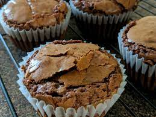

Just For You Brownies
| Time: 25 minutes | Yield: 2 |

Description
Delicious cupcake shaped personal brownies. Big flavor, small treat.
When it comes to making these super easy brownie cupcakes the trick is all in how you bake them. Start by preparing your ingredients according to the instructions. Then, instead of baking them in a single pan, divide the batter into a muffin tin to create 2 perfectly portioned cupcake-style brownies. All that’s left to do is to frost and decorate them anyway you like. They’re the perfect — and cutest — way to eat brownies no matter what the occasion.
Ingredients
- 2.5 tbs melted butter
- 1/4 cup light brown sugar
- 1 egg yolk
- 1/4 cup cocoa powder
- 1 tbs flour
- 1 tsp vanilla extract
- as many chocolate chips as desired
Steps
- melt butter
- mix in light brown sugar until mixed well
- add remaining ingredients (besides chocolate chips)
- mix until batter is thick
- add your chocolate chips
- spray cupcake tin and fill each evenly
- Enjoy!